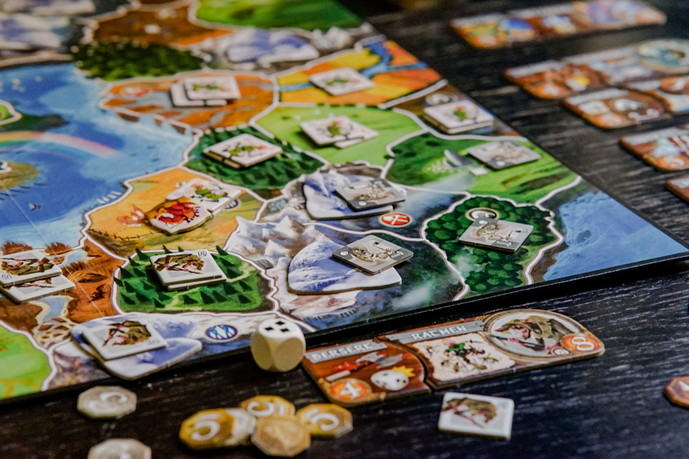

Who am i?
My name is Boaz Roskam, and I turned 20 years old this year.
I am still living at home in Gouda with my family,
which consists of 2 parents, one older brother, 2 younger brothers and my dog.
I am studying informatica at the University of Utrecht, currently following Web tech and Databases.
My hobbies

I have liked sports ever since I was young.
I played rugby for a while and now I go to the gym twice a week.
Besides this I also like hanging out with friends and playing video or board games with them.
Nothing better than having a beer and playing a few board games with friends. Furthermore,
I love spending time with my girlfriend or brothers.
I often play games with my brothers, and I spend every weekend with my girlfriend.
My school carreer
It’s been almost 8 years since I started high school. I started at VWO, and I fitted well there.
I got good grades in general, although I had a hard time with other languages like French or Latin.
But still I was going to make it if I worked hard enough. This was until the Corona period came.
I had a really tough time learning online and I felt behind fast.
After this I was too much behind on a subject what resulted in me going to the HAVO.
I did have an easy time there and I got my diploma with a nice grade list.
After this I started my HBO informatica.
I found out this was to easy so after I got my Propedeuse, I applied for this university.
| School grades middle school |
| Subject |
Final Grade |
| English |
9 |
| Dutch |
8 |
| Physics |
9 |
| Math |
9 |
| Chemistry |
8 |
| Economics |
10 |
My dog
Since 3 months ago we have a dog at home.
Her name is Nala. She is a mix between an Australian Shepard and a Pomsky.
She is a very enthusiastic dog and is always very excited when we come home.
She is still very young, about 5 months, so she can also be very stubborn.
I love going on walks with her, and since a while,
we make a long walk every morning where she can spend all her energy.
It has been very nice having her around.